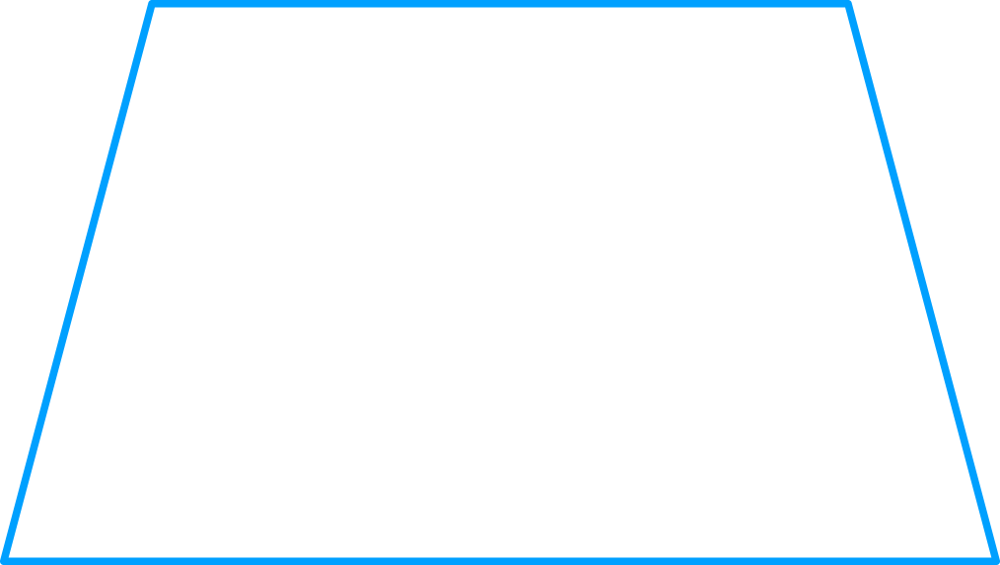

- 물음 1
- 물음 2
- 물음 3
-
사각형 1개를 그려 보세요.
예  -
각도기로 사각형의 네 각의 크기를 재어 합을 구해 보고, 친구들과 비교해 보세요.
예105°75°75°105°105° + 105° + 75° + 75° = 360° -
이 활동으로 알게 된 점을 이야기해 보세요.
-
예
크기와 모양이 달라도 사각형의 네 각의 크기의 합은 360°입니다.
-
예